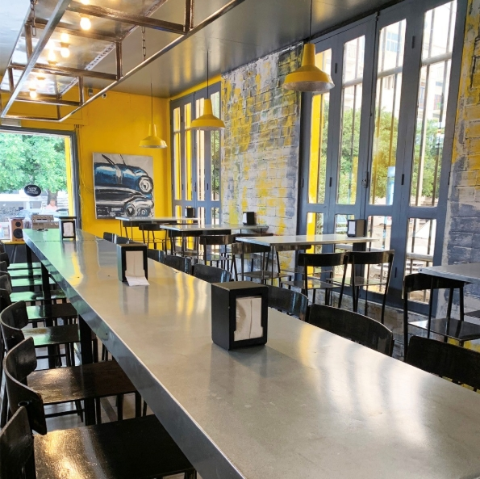
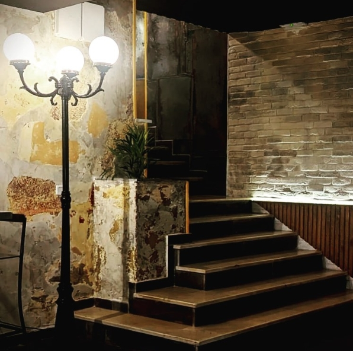
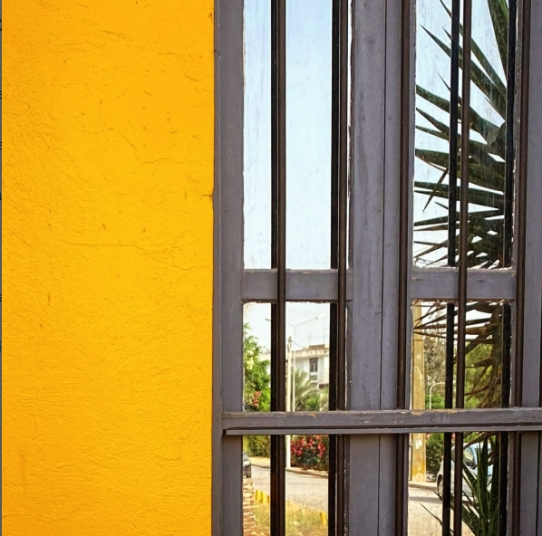
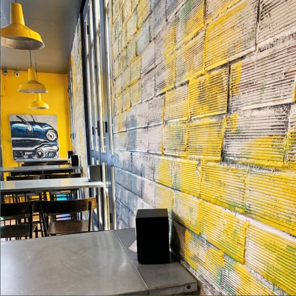
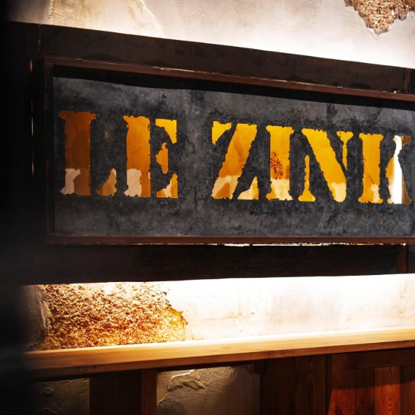
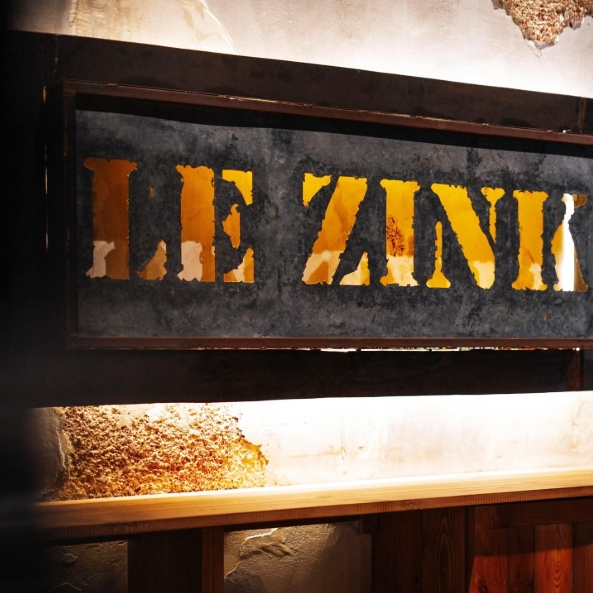

À propos de Zink
Le Zink est une signature. Une cuisine précise, des saveurs nettes et une atmosphère qui parle sans élever la voix. Rien n'est laissé au hasard, tout est pensé pour créer un moment juste, sincère et mémorable.
Nos Valeurs
- Des saveurs nettes.
- Un style assumé.
- Une signature Zink.
Notre Histoire
Tout commence par une idée simple. Celle de transformer un burger en un vrai moment de plaisir. Au Zink, chaque recette est pensée avec soin, chaque saveur est choisie avec cœur, dans une ambiance chaleureuse qui invite à prendre le temps. Un lieu né d'une passion sincère, devenu une adresse qu'on aime retrouver.
L'Atmosphère Zink
Rejoignez-nous pour une ambiance décontractée, parfaite pour les amis et la famille. Nos équipes passionnées sont là pour vous accueillir avec sourire et saveur.
    
